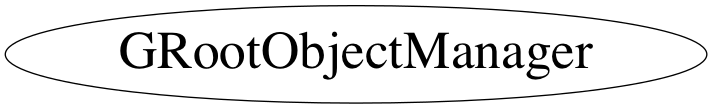

Function Members (Methods)
public:
private:
| GRootObjectManager() | |
| static void | ExtractObjects(TCollection*) |
| static void | ExtractObjectsFromFile(TDirectoryFile* file) |
Data Members
private:
| static TList* | fCanvasList | |
| static map<TCanvas*,std::vector<GPadObj> > | fCanvasMap | |
| static GRootObjectManager* | fGRootObjectManager | |
| static TList* | fObjectsMap |
Class Charts



Function documentation
void RemoveCanvas(TCanvas* = 0)
void RemoveObject(TObject* )
void RemoveObject(const char* name)
TH2 * GetLast2D(TObject* object = 0)
TH3 *GRootObjectManager::GetNext3D(TObject *object) { } TH3 *GRootObjectManager::GetLast3D(TObject *object) { }
{ return 0; }void Update(Option_t* opt = "MemClean")
TString option = opt; bool u_mem = option.Contains("MEM",TString::ECaseCompare::kIgnoreCase); bool u_file = option.Contains("FILE",TString::ECaseCompare::kIgnoreCase); bool u_all = option.Contains("ALL",TString::ECaseCompare::kIgnoreCase); bool u_clean = option.Contains("CLEAN",TString::ECaseCompare::kIgnoreCase);
void ExtractObjects(TCollection* )
void ExtractObjectsFromFile(TDirectoryFile* file)
void Print()
GMemObj * FindMemObject(const char* name)
{ return ((GMemObj*)fObjectsMap->FindObject(Form("%s_%s",name,"memobj"))); }